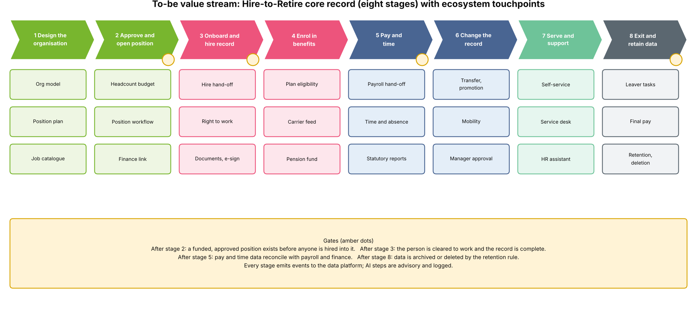
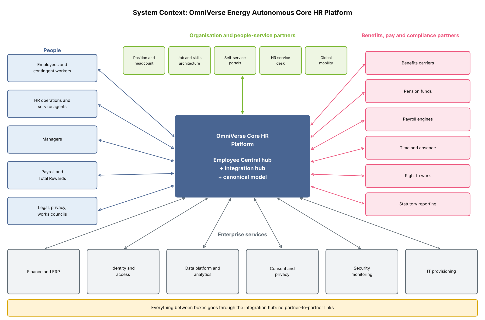
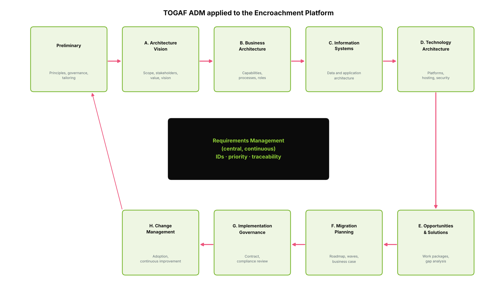
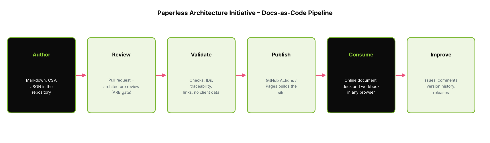

OmniVerse Energy Autonomous Core HR Platform
OmniVerse Energy · Employee Central hub · 20 ecosystem categories · SAP Activate
TOGAF · BABOK · DAMA-DMBOK2 · BIZBOK (BA Guild) · 12 architecture streams · SuccessLabs Academy
Online, from one source
Document
24 chapters: vision, business, requirements, data, application, technology, migration, governance, integration patterns, the ecosystem categories, responsible AI and the SAP Activate case study.
Deck
This presentation. Keys: ← → move, F full screen, O overview.
Workbook
Registers and matrices: search, sort, filter, dashboard.
No client data. Every local value is a [placeholder]. Nothing to upload or download: share a link.
The problem and the vision
The problem
- About [30] local HR tools and spreadsheets
- Different organisation structures by country
- Positions tracked outside the HR system
- Benefits sent to carriers by file
- Headcount reports that disagree
- No end-to-end owner of workforce data
One trusted record of every person, position and organisation unit, on one platform that connects the best partners today and lets OmniVerse replace any of them tomorrow.
Objectives, each measurable
Who cares and how we engage them
| Stakeholder | Power | Interest | Engagement approach |
|---|---|---|---|
| Chief People Officer (sponsor) | High | High | Monthly steering; decisions on scope and waves |
| Head of HR Operations | High | High | Weekly design authority; owns process catalogue |
| Regional HR leaders (50+ countries) | Medium | High | Regional fit-to-standard workshops |
| HR service agents and administrators | Low | High | Sandbox walk-throughs; super-user network |
| Managers and employees | Medium | Medium | Pilot groups; feedback loops |
| Total Rewards and Payroll | High | High | Joint hand-off design and reconciliation |
| Finance | High | Medium | Joint finance-HR design sessions |
| Legal, Privacy and Works Councils | High | High | Early review; agreements per country |
| Enterprise Architecture Office | High | High | Architecture review board |
| IT Security and Identity | High | Medium | Security reviews at each gate |
Thirteen principles guide every decision
Business
- One person, one record
- Process before tool
- Position drives headcount
- People decide
Data
- Personal data held in trust
- Canonical workforce model
- Provider detail stays with the provider
- Every entity has an owner and steward
Application
- Hub and spokes
- Standard first, then configure, then extend
- Capability interface, replaceable partner
- Event-driven by default
Technology
- Open standards
- Zero trust for partners
- Residency by design
- Observable and exit-ready
Capability map
Organisation and Position
Employment Records
Compliance and Verification
Benefits and Pay
People Services
Insight and Control
Platform and Trust
Value stream: Hire-to-Retire core record (eight stages) with ecosystem touchpoints

52 requirements, four BABOK types
By type
By priority (MoSCoW)
Every requirement has an ID, acceptance criteria, owner, trace links and status.
Business requirements
| ID | Requirement | MoSCoW |
|---|---|---|
| BR-001 | Provide one global employee, organisation and position record for all countries, with local variants handled by configu… | Must |
| BR-002 | Control headcount through approved positions. | Must |
| BR-003 | Make joiner, mover and leaver changes faster and consistent. | Must |
| BR-004 | Give one benefits model with local plans and carriers. | Should |
| BR-005 | Measure and own workforce data quality end to end. | Must |
| BR-006 | Meet privacy, retention and works-council rules in every country. | Must |
| BR-007 | Replace any partner in a category without redesign. | Must |
| BR-008 | Deliver in waves with SAP Activate, starting with a pilot. | Must |
Key functional requirements
| ID | Requirement | MoSCoW |
|---|---|---|
| FR-001 | Maintain the organisation structure with effective dating and country variants. | Must |
| FR-002 | Create, approve, change and close positions with workflow. | Must |
| FR-003 | Maintain a job and skills catalogue mapped to country jobs. | Should |
| FR-004 | Create the person and employment from an accepted offer. | Must |
| FR-005 | Support transfers, promotions and other changes with approval rules. | Must |
| FR-006 | Order right-to-work checks and store only outcome and date. | Must |
| FR-007 | Generate and sign employee documents. | Should |
| FR-008 | Administer benefits with eligibility, enrolment and life events. | Must |
| FR-009 | Send pay data to payroll and receive reconciliation. | Must |
Non-functional requirements
| ID | Requirement | MoSCoW |
|---|---|---|
| NF-001 | Availability of the core record and APIs. | Must |
| NF-002 | Performance of self-service and approvals. | Should |
| NF-003 | Integration recovery. | Must |
| NF-004 | Least-privilege access. | Must |
| NF-005 | Encryption and key control. | Must |
| NF-006 | Audit of reads and changes of sensitive data. | Must |
| NF-007 | Data residency by country. | Must |
| NF-008 | Accessibility and language. | Must |
| NF-009 | Partner API versioning and contract tests. | Must |
System context

Layered reference architecture

Components (architecture building blocks)
| ID | Component | Layer | Key responsibilities |
|---|---|---|---|
| C01 | Employee and Manager Self-Service | Experience | View and change own data, request documents, approve team changes |
| C02 | HR Service Desk and Cases | Experience | Log, route, track and close employee requests with service levels |
| C03 | Mobile and Collaboration Channels | Experience | Push approvals and tasks to where people work |
| C04 | HR Assistant (advisory) | Experience | Answer policy and status questions; draft text; never change records |
| C05 | Employment Records | Core hub | Person, employment, job, pay and contingent worker data |
| C06 | Organisation and Foundation Data | Core hub | Organisation tree, codes, effective dating, country variants |
| C07 | Position Management | Core hub | Create, approve, change and close positions; position to person link |
| C08 | Job and Skills Catalogue | Core hub | Maintain job classification and mapping across countries |
| C09 | Workflows and Approvals | Core hub | Route changes by rule, delegate, escalate, audit |
| C10 | Business Rules and Events | Core hub | Derive values, validate input, emit events on change |
| C11 | Role-Based Permissions | Core hub | Least-privilege access by role, country and population |
| C12 | Documents and Forms | Core hub | Generate, store and retain employee documents |
Interface catalogue
| ID | Interface | Direction | Mode | Frequency | Classification |
|---|---|---|---|---|---|
| IF-01 | Hire hand-off: accepted offer to person and employment | In | API via C26 / event | On event | Restricted |
| IF-02 | Organisation, cost centre and location sync | In | API via C26 / scheduled | Hourly and on change | Confidential |
| IF-03 | Position and cost-centre link to finance | Out | API via C26 | On change | Confidential |
| IF-04 | Headcount plan to positions | In | API via C26 | On approval | Confidential |
| IF-05 | Job catalogue and skills sync | In | API via C26 / scheduled | Daily | Internal |
| IF-06 | Person and employment to payroll | Out | API via C26 / file | Each cycle and on change | Restricted |
| IF-07 | Payroll results and reconciliation | In | API via C26 / file | Each cycle | Confidential |
| IF-08 | Time and absence exchange | Both | API via C26 | Hourly | Confidential |
| IF-09 | Benefit eligibility to carriers | Out | API via C26 / secure file | Daily and on life event | Restricted |
| IF-10 | Carrier confirmation | In | Webhook / secure file | On event | Restricted |
| IF-11 | Pension and fund contributions | Out | Secure file / API | Each cycle | Restricted |
Conceptual data model: the Case is the spine

All eleven data management areas applied
Quality rules at entry, in integration and in reporting
| ID | Dimension | Rule | Threshold |
|---|---|---|---|
| DQ-01 | Completeness | Mandatory person and employment fields complete before the record is active | 100% |
| DQ-02 | Uniqueness | No duplicate person by name, birth date and national identifier after matching | Under [0.2]% duplicates |
| DQ-03 | Validity | Country-specific formats valid for national identifier, bank and address | 99.5% |
| DQ-04 | Consistency | Every active employee has an active position and manager | 100% |
| DQ-05 | Consistency | Every active position has a valid cost centre | 100% |
| DQ-06 | Validity | Organisation tree has no loops and every unit has an active parent | 100% |
| DQ-07 | Timeliness | Hire and change events reach payroll before cut-off | 99.5% |
| DQ-08 | Consistency | Benefit enrolments match carrier confirmations | 99% |
| DQ-09 | Timeliness | Right-to-work outcome present before first day | 100% |
| DQ-10 | Validity | Retention class assigned to every record type | 100% |
Ownership, stewardship, classification
Roles
- Data owner: accountable per domain
- Data steward: quality and definitions
- Data and privacy board: monthly
Classification
- Internal
- Confidential: employment, position, pay hand-off
- Restricted: identity, health, bank, diversity
Lifecycle
- Collect with purpose and notice
- Retain by region table, then delete
- Provider-held detail is not copied
Security, resilience, hosting
Security
- Enterprise SSO and SCIM for staff
- Scoped credentials per partner, in a vault
- Signed, replay-protected events
- Immutable audit log
- Contract tests per partner release
Resilience and hosting
- Availability [99.5]%; recovery targets per component
- Retry with back-off, dead-letter queue, daily reconciliation
- Vendor cloud in the region set by the residency table
- Exit plan tested yearly per partner category
Architecture decision records
| ID | Decision | Status |
|---|---|---|
| ADR-01 | Employee Central is the global employee, organisation and position system of record | Proposed |
| ADR-02 | All partner traffic goes through the integration hub | Proposed |
| ADR-03 | Prefer standard integrations and certified connectors; build adapters on the hub where no… | Proposed |
| ADR-04 | Canonical workforce model with mapping tables per partner | Proposed |
| ADR-05 | Positions drive headcount and cost | Proposed |
| ADR-06 | Benefits use one global model with local plans | Proposed |
| ADR-07 | Right-to-work and identity detail stays with the provider | Proposed |
| ADR-08 | Payroll engines are multi-vendor by country behind one interface | Proposed |
The ADM applied

Transition architectures and work packages
TA0 Baseline
TA1 Core record
TA2 Rewards and compliance
TA3 Insight and scale
Gap analysis
| Domain | Baseline (typical) | Target | Closing work package |
|---|---|---|---|
| Business | Different HR process in every country | One standard with local variants | WP-02 |
| Business | Positions tracked in spreadsheets | Position-based headcount | WP-05 |
| Data | Duplicate and inconsistent person data | One person record, measured quality | WP-03 |
| Data | No canonical model | Canonical workforce model and ID map | WP-03 |
| Application | About [30] local HR tools | One core record | WP-08 |
| Application | Benefits by file to carriers | Global benefits model, connected carriers | WP-09 |
| Application | Re-keying into finance and payroll | Automated hand-off | WP-06 |
| Technology | Point-to-point files | Integration hub with adapters | WP-04 |
Top risks by score (likelihood × impact)
KPI catalogue
| ID | KPI | Frequency | Owner |
|---|---|---|---|
| K-01 | Time to effective change | Weekly | Head of HR Operations |
| K-02 | Position-based hires | Monthly | Head of Workforce Planning |
| K-03 | Headcount reconciliation | Monthly | Head of Finance Operations |
| K-04 | Duplicate person rate | Monthly | Person data steward |
| K-05 | Data quality score | Monthly | Workforce Data Council |
| K-06 | Self-service share | Monthly | Head of HR Service |
| K-07 | Case resolution within service level | Weekly | Head of HR Service |
| K-08 | Payroll hand-off accuracy | Each cycle | Head of Payroll |
| K-09 | Benefit enrolment confirmation | Weekly | Head of Total Rewards |
| K-10 | Joiner access ready | Weekly | IT Service Owner |
| K-11 | Leaver access removed | Weekly | IT Security |
| K-12 | Right-to-work before start | Weekly | Head of Compliance |
Quality gates from vision to benefit review
| Quality gate | Stage | TOGAF 10 ADM | BABOK v3 knowledge area |
|---|---|---|---|
| G0 Mobilise | Plan | Preliminary | Business Analysis Planning and Monitoring |
| G1 Vision approved | Vision | A Architecture Vision | Strategy Analysis |
| G2 Requirements elicited | Elicit | B Business Architecture | Elicitation and Collaboration |
| G3 Requirements baseline | Define | B Business Architecture | Requirements Analysis and Design Definition |
| G4 Data design approved | Data | C Information Systems (Data) | Requirements Analysis and Design Definition |
| G5 HLDD approved | Application | C Information Systems (Application) | Requirements Analysis and Design Definition |
| G6 Security and tech approved | Technology | D Technology Architecture | Requirements Analysis and Design Definition |
| G7 Roadmap approved | Plan change | E Opportunities & Solutions; F Migratio… | Strategy Analysis; Requirements Life Cycle Manage… |
| G8 Release readiness | Deliver | G Implementation Governance | Solution Evaluation |
| G9 Benefit review | Improve | H Architecture Change Management | Solution Evaluation; Requirements Life Cycle Mana… |
| Continuous | Control | Requirements Management | Requirements Life Cycle Management |
Docs-as-code: author, review, validate, publish, consume

Edit in the browser → pull request → review → merge → site rebuilds. One source, three views: Document, Deck, Workbook.
Ten business architecture domains: four core, six extended
Core (stable)
Extended (change more often)
Strategy execution in five steps
1 Establish business strategy
- Business performance assessme…
- Strategy definition
- Objective definition
- Metric definition
- Course of action definition
- Objective and metric matching
2 Assess business impact
- Business scenario definition
- Value stream impact analysis
- Capability impact analysis
- Information impact analysis
- Business unit impact analysis
- Product impact analysis
3 Architect business solution
- Architecture change analysis
- Target state architecture vis…
- Business-driven IT architectu…
- Target state option analysis…
- Case management design
- Business process design
4 Establish initiative plans
- Initiative definition
- Initiative measurement criter…
- Objective to initiative mappi…
- Initiative trade-off and deci…
- Initiative mapping
5 Deploy solution
- Deployment team engagement
- Deliverable deployment
- Transformation management
- Success evaluation
Vision, Value, Victory, Venture: the transformation spine
V1 Vision
Where are we going?
Policy, Portfolio, Program
Vision statement; strategic intent; transformation North Star; policy alignment; transformation portfolio; program structure
V2 Value
What meaningful value are we creating?
Platform, Product, Process
Value proposition; value tree; capability and value map; platform strategy; product and service design; process and value-stream transformation; value metrics
V3 Victory
What tangible outcomes and momentum have we achieved?
People, Practice, Project
Change and adoption plan; new practices; project execution plan; milestone and KPI dashboard; benefits realisation; victory evidence
V4 Venture
How do we sustain, scale, replicate and evolve the transformation?
Institutionalise, sustain, scale, replicate, productise, build ecosystems, innovate
Venture and scale model; operating model; governance; sustainability model; replication playbook; continuous-improvement loop
Venture feeds the next Vision. 12 streams are the lenses; industry is the context.
Nine pillars
| Pillar | Group | Core question | Typical measure |
|---|---|---|---|
| Policy | V1 Vision | What rules, regulations, standards, principles and strategi… | Share of decisions traced to a principl… |
| Portfolio | V1 Vision | Which investments and initiatives should be prioritised, se… | Benefit per unit of investment; share o… |
| Program | V1 Vision | How should related projects be orchestrated to achieve stra… | Milestones met; dependency conflicts op… |
| Platform | V2 Value | What shared digital and physical capabilities enable scale? | Reuse rate; platform availability |
| Product | V2 Value | What tangible product, service, capability or outcome is de… | Adoption of each service; satisfaction |
| Process | V2 Value | Which end-to-end value streams and operating processes must… | Cycle time; rework rate; straight-throu… |
| People | V3 Victory | Who must lead, execute, adopt, operate and benefit? | Adoption; trained share; stakeholder co… |
| Practice | V3 Victory | What repeatable behaviours, methods, skills and ways of wor… | Gate pass rate; practice maturity |
| Project | V3 Victory | What time-bound intervention creates or changes a capabilit… | On-time, on-budget delivery; defects at… |
The 18-stage journey: stages 1 to 9
| Stage | Name | Deliverable | Position |
|---|---|---|---|
| 01 | Industry Context | Industry Opportunity and Threat Map | Before V1 |
| 02 | Enterprise Context | Enterprise Context Canvas | Before V1 |
| 03 | Transformation Trigger | Transformation Trigger Statement | Before V1 |
| 04 | V1 Vision | Vision Canvas | V1 |
| 05 | Problem Framing | Problem Statement and Issue Tree | V1 |
| 06 | Discovery and Diagnosis | Current-state, capability map, stakeholder map, process and… | V1 |
| 07 | 9P4V Assessment | 9P4V Transformation Canvas | V1 to V4 |
| 08 | Experience Discovery | Experience Journey and Pain Point Map | V2 |
| 09 | 12-Stream Architecture | Target architecture and one deliverable per stream | V2 |
The 18-stage journey: stages 10 to 18
| Stage | Name | Deliverable | Position |
|---|---|---|---|
| 10 | Strategic Options | Options evaluation | V1 to V2 |
| 11 | Trade-Offs | Trade-off record | V2 |
| 12 | Experiment | Experiment and MVP Canvas | V2 to V3 |
| 13 | Decision Room | Executive Recommendation | V1 to V3 |
| 14 | Transformation Roadmap | Roadmap | V3 |
| 15 | Transformation Shock | Re-Architecture Decision | V3 |
| 16 | V3 Victory | Victory Dashboard | V3 |
| 17 | V4 Venture | Venture and scale model, operating model, governance, repli… | V4 |
| 18 | Reflection and Next Vision | Reflection and Next-Vision Canvas | V4 to V1 |
Applied Architecture Score and levels
| Dimension | Weight % |
|---|---|
| Industry Insight | 10 |
| Strategic Problem Solving | 10 |
| 12-Architecture Integration | 20 |
| 9P4V Application | 15 |
| Transformation Design | 15 |
| Experience Architecture | 10 |
| 21st-Century Skills | 10 |
| Executive Communication | 5 |
| Value and Victory Measurement | 5 |
| Total | 100 |
| Score | Capability level |
|---|---|
| 0 to 49 | Explorer |
| 50 to 64 | Practitioner |
| 65 to 79 | Architect |
| 80 to 89 | Advanced Architect |
| 90 to 100 | Architecture Leader |
Twelve architecture streams
Who owns each stream and what it produces
| Stream | Key artefacts | TOGAF ADM phases | Typical owner |
|---|---|---|---|
| Enterprise | Architecture vision; principles catalogue; capability map; roadmap; g… | Preliminary, A, E, F, G, H | Chief or enterprise architect |
| Business | Capability map; value stream; process catalogue; business rules; requ… | A, B, Requirements | Business architect or analyst |
| Data | Data entities; data dictionary; DQ rules; DMBOK area targets | C (Data), Requirements | Data architect, data owner |
| Application | Component catalogue; ABB/SBB list; context and layered diagrams | C (Application), E | Application or solution architect |
| Technology | Technology standards; platform services; decision records | D, E | Technology architect |
| AI | AI use-case register; model lifecycle; AI principles; evaluation crit… | B, C, D, G | AI architect, data scientist |
| Security | Classification scheme; access matrix; controls; security risks | All phases | Security architect |
| UI/UX | Personas; journey map; UX standards; accessibility criteria | B, C, Requirements | UX architect or designer |
| Infrastructure | Environment and hosting model; availability targets; capacity plan | D, E, G | Infrastructure architect |
| Integration | Interface catalogue; integration patterns; API standards | C, D | Integration architect |
| Domain | Domain glossary; business rules; domain reference model | B, C | Domain architect or subject expert |
| Industry | Regulatory obligations; country profile; industry reference mapping | Preliminary, A, B | Industry architect |
Every core concept and term, placed in the streams
Covered
- 18 core-concept topics plus sub-sections (chapter 3)
- 89 defined terms (chapter 4)
- Each with a plain-words meaning, a location, an artefact, a primary and supporting streams
TOGAF items touched per stream
Use it for any solution, any country
1. Copy
Use this template on GitHub.
2. Initialise
Run init_template.py with your programme and subject.
3. Fill
Edit registers and chapters online.
4. Publish
Commit: the site rebuilds itself.
Make it local
- Fill the [placeholders]: users, retention, hosting, regulator format, tax treatment
- Run a fit-gap against your existing platforms
- Agree the data owners and stewards
- Take the baseline KPIs, then plan wave 1
Architecting for a Better World
SuccessLabs Academy · Autonomous Core HR Reference Architecture